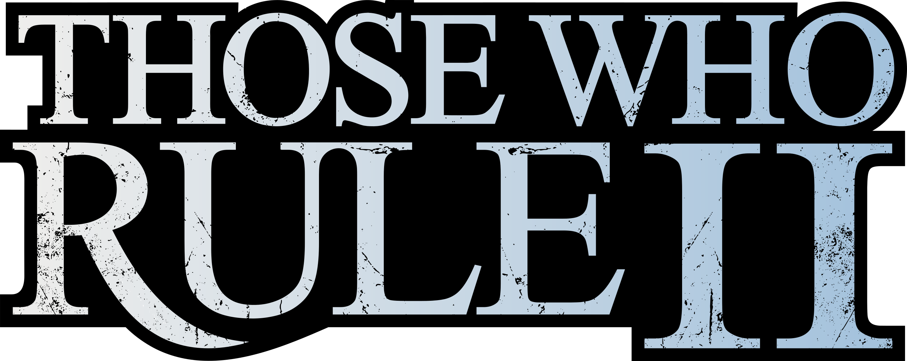
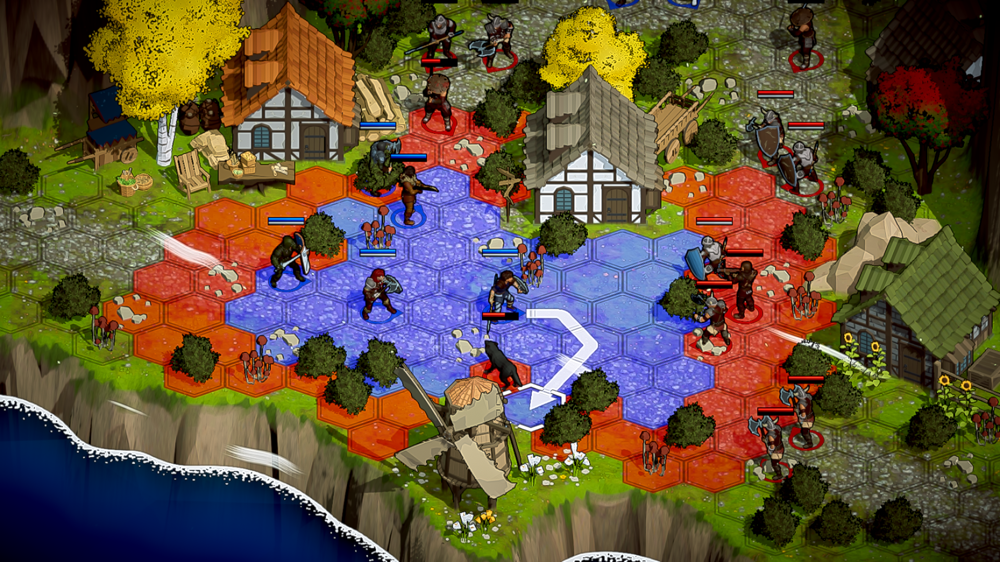
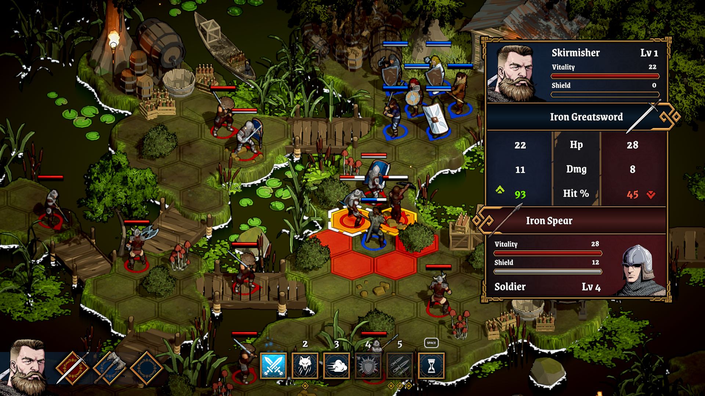
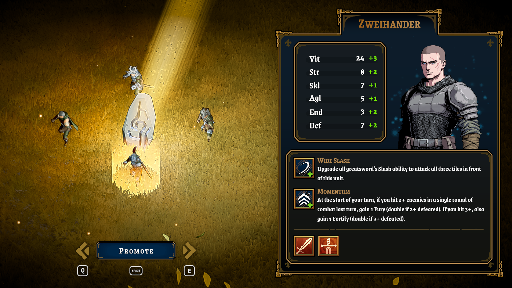
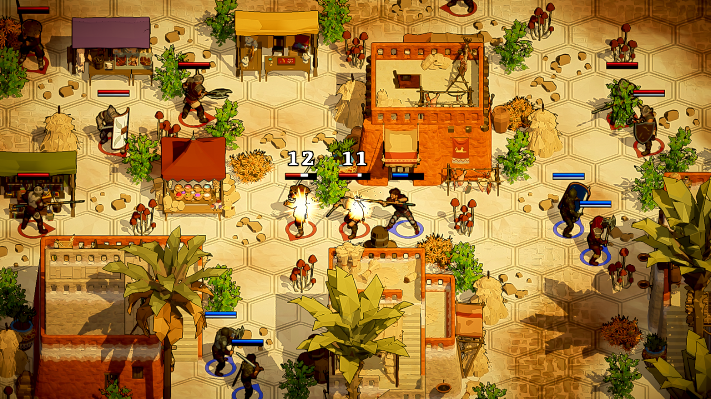

Lead a band of recruits through a web of betrayal as war looms over the land. Master tactical turn-based combat and shape the fate of a fractured kingdom.




Those Who Rule is a tactical turn-based RPG focused on positioning, terrain, and challenging combat. Lead a roster of unique characters, master over 40 classes, and forge your path through a land shaped by the choices you make.
Those Who Rule is developed by a solo developer who left a corporate software career to bring a lifelong passion for tactical RPGs to life.